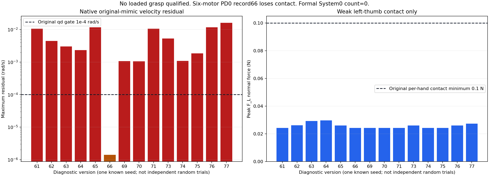
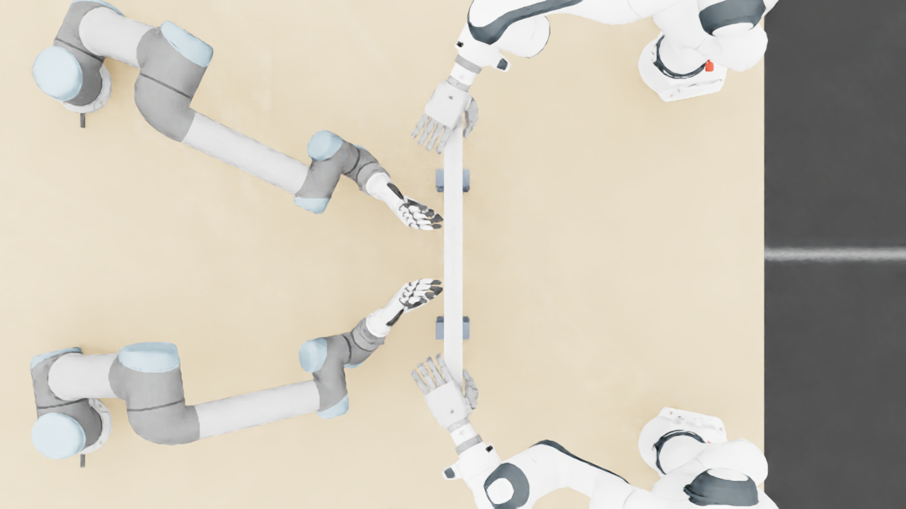
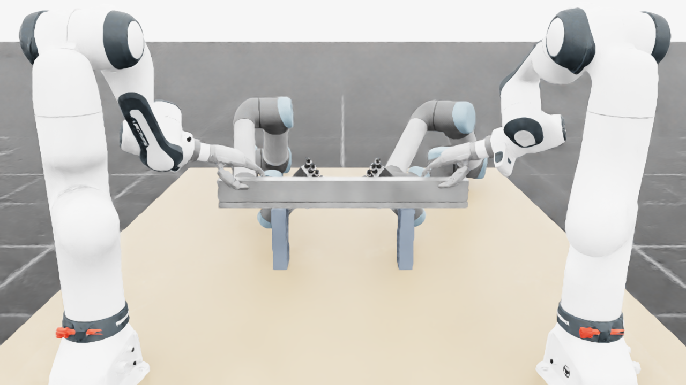
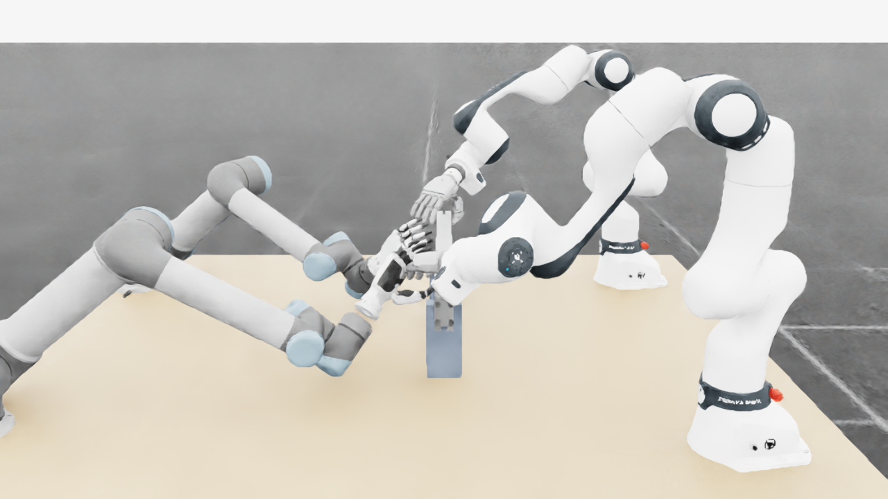
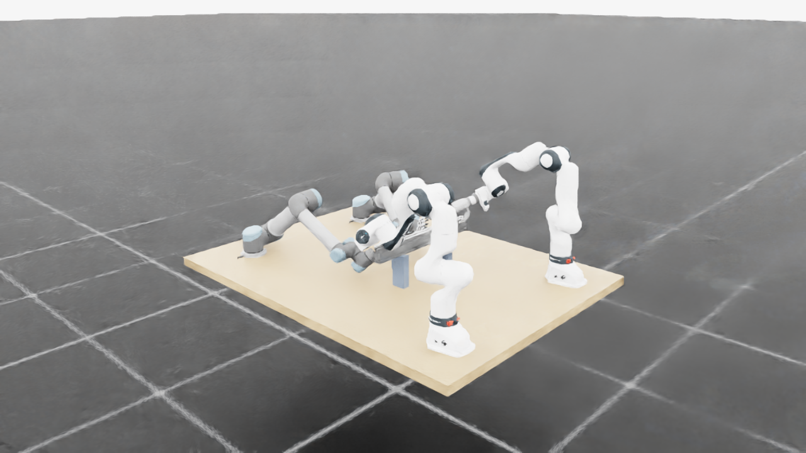

14条完成的短时诊断记录、合计304个物理子步，均来自同一个已知初态。原模型约束、质量和摩擦保持原验收要求；当前承载仅为左手拇指末节弱接触。原始记录、失败和实际退出码全部保留。
诊断66的短时模型约束通过，但仅2/64步存在正接触，随后失去接触；其四手夹持、抬升及完整任务未达标。其余13条记录的原模型速度约束均未通过。
原始24条联动关系逐物理步检查：位置与速度残差均≤0.0001。正式抓取还要求四手各>0.1 N连续≥0.25 s、摩擦余量以及后续100 mm抬升等完整阶段。这里最长单条记录只有0.066664 s；全部记录的四手有效抓取窗口均为0。

| 版本 | 单项变化 | 物理步 | 最大速度残差rad/s | 原模型约束 | 左手峰值N | 正接触步 | 完整任务 |
|---|---|---|---|---|---|---|---|
| 61 | 原控制 | 16 | 0.0105850659 | 未通过 | 0.024300 | 16/16 | 未完成 |
| 62 | 改为链式引用 | 16 | 0.00443115272 | 未通过 | 0.026238 | 14/16 | 未完成 |
| 63 | 位置迭代128 | 16 | 0.00303278118 | 未通过 | 0.029275 | 14/16 | 未完成 |
| 64 | 速度迭代255 | 16 | 0.00231630425 | 未通过 | 0.029654 | 15/16 | 未完成 |
| 65 | 根速度迭代1 | 16 | 0.011717028 | 未通过 | 0.026083 | 14/16 | 未完成 |
| 66 | 六个手部PD置零 | 64 | 1.39465556e-06 | 通过 | 0.024302 | 2/64 | 未完成 |
| 69 | 六个手部PD×0.1 | 32 | 0.0010629415 | 未通过 | 0.024302 | 24/32 | 未完成 |
| 70 | 六个手部PD×0.5 | 16 | 0.00105063291 | 未通过 | 0.024302 | 16/16 | 未完成 |
| 71 | GPU1原控制复核 | 16 | 0.0105850659 | 未通过 | 0.024300 | 16/16 | 未完成 |
| 73 | 等价反向约束 | 16 | 0.00533542456 | 未通过 | 0.025987 | 14/16 | 未完成 |
| 74 | 仅拇指屈曲PD置零 | 16 | 0.00108581083 | 未通过 | 0.024300 | 4/16 | 未完成 |
| 75 | 仅拇指对掌PD置零 | 32 | 0.00186022837 | 未通过 | 0.024303 | 29/32 | 未完成 |
| 76 | 根速度迭代0 | 16 | 0.011717028 | 未通过 | 0.026083 | 14/16 | 未完成 |
| 77 | 根与场景速度迭代上限0 | 16 | 0.0161437336 | 未通过 | 0.027408 | 14/16 | 未完成 |
每条记录的原生几何、关节限位、速度限位与接触力上限检查通过；这仍未满足原模型与完整任务的联合门槛。PD变化仅为控制诊断，学习策略与System 0均关闭。
用原始URDF全部26个手部零件的质量、质心和固定连接独立重建重力补偿，投影到六个独立电机后，最大差值为5.42227779e-07 Nm。未捕获原生局部质心，结论限于该已知轨迹的源模型比较。
全部正接触点归属于左拇指末节left_thumb_4。关节速度与原生身体角速度的独立核查已在先前报告完成，当前继续检查求解阶段和联动行之间的作用。
根速度迭代0的诊断76与根速度迭代1的诊断65，16步全部164个记录字段逐值一致。仅改根属性并未改变这条短轨迹。诊断77进一步限定场景速度迭代上限为0并记录各刚体迭代属性；配置元数据与实际二进制迭代次数仍需区分。
NVIDIA文档说明位置和速度迭代的方程及TGS阶段不同。这只是设计对照的依据；安装二进制与公开源码的精确提交对应关系尚未证明。官方求解器说明
以下为诊断71的原生静态帧。短时诊断没有足够帧数展示完整任务；先前705周期的四路视频保持原版本与身份标记，可从顶部入口查看。




67在等待资源阶段取消，未启动原生模拟；68未启动；72发生初始化观测API不兼容，物理步为0。这三次未计入14条完成记录。接触坐标读取器V1失败后，以V2重建折叠的固定掌部坐标；74力矩审计首次早于其前置审计，失败已保留，等待前置完成后运行原封存审计。
控制71在另一GPU上复核，与原控制61的全部164个物理记录字段一致。所有14条记录的77个原生参数数组及13个初态数组与71逐值相同；数值求解配置、约束表达或软件PD按各自预先声明改变。求解器暖启动缓存未恢复，不能称为完整动力学状态重放。
4万随机提案仍为软件空间采样，未新增独立原生随机案例；完整50维操作空间、标准2FR3+2JAKA+4F2、物体故障的原生整合及真正学习System 0同输入正式评测仍待完成。
| 要求 | 原验收门槛 | 状态 |
|---|---|---|
| 回退保持在原始非零速度和延迟下持续安全 | 所有128输入全部原生几何/接触/限位/速度通过完整480控制周期；正式独立集另验 | 联合未验收 |
| 保留操作意图并有实际四臂运动 | 冻结门槛：平均路径与各分层比例>=0.9、四臂运动比例>=0.9、全部26关节平均运动范围>=0.001rad；暂停非威胁臂继续和恢复及任务完成联合验收 | 联合未验收 |
| 强随机、大范围操作空间与定向危害覆盖 | 记录采样分布、全26DOF和速度支持、覆盖图、所有拒绝及分层；不得将筛选集当无条件全空间 | 联合未验收 |
| 科学规范的冻结协议、独立多种子、留出与不确定性报告 | 机制/判据冻结后使用至少两套独立新种子；全部登记窗口与失败保留；无结果后调参；报告最坏种子和适用统计上界 | 联合未验收 |
| 物体位置、姿态、大小、速度、可达性进入明确规划与安全输入 | 逐帧实际对象状态绑定、坐标/尺度校验、可达与拥挤判定、过时/缺失状态安全处理；视觉接口另独立校验 | 联合未验收 |
| 真实物理夹持、抬升、搬运、放置和释放 | 正式100mm抬升、>=2s稳定持物准入；摩擦接触驱动，无reset后物体写位姿、parenting或固定关节替代摩擦夹持；指定手接触和阶段成功联合判定 | 联合未验收 |
| 真实四臂共同任务且有安全与不安全的同输入对照 | 同一raw/S0外生命令初态对象资产；cross/self/table各危害；选择性暂停、另一臂移开、恢复、任务成功和零违规全部通过 | 联合未验收 |
| 完整原生观测和独立危害判据，无漏测或单看画面 | 9021球对与82碰撞刚体原生接触每个物理子步，全74关节/实际目标/FIFO、对象风险；非有限数据或分母缺失即拒绝 | 联合未验收 |
| 网页可审阅的安全对照、完整视角和证据归档 | 俯视/正视/侧视及需要的局部视角正确缩放，原生状态与视频绑定，暂停/恢复/任务侧车；主站链接、实际部署和公共字节回读通过 | 联合未验收 |
证据矩阵26 · 全部公开文件索引和哈希 · 原始字节来源